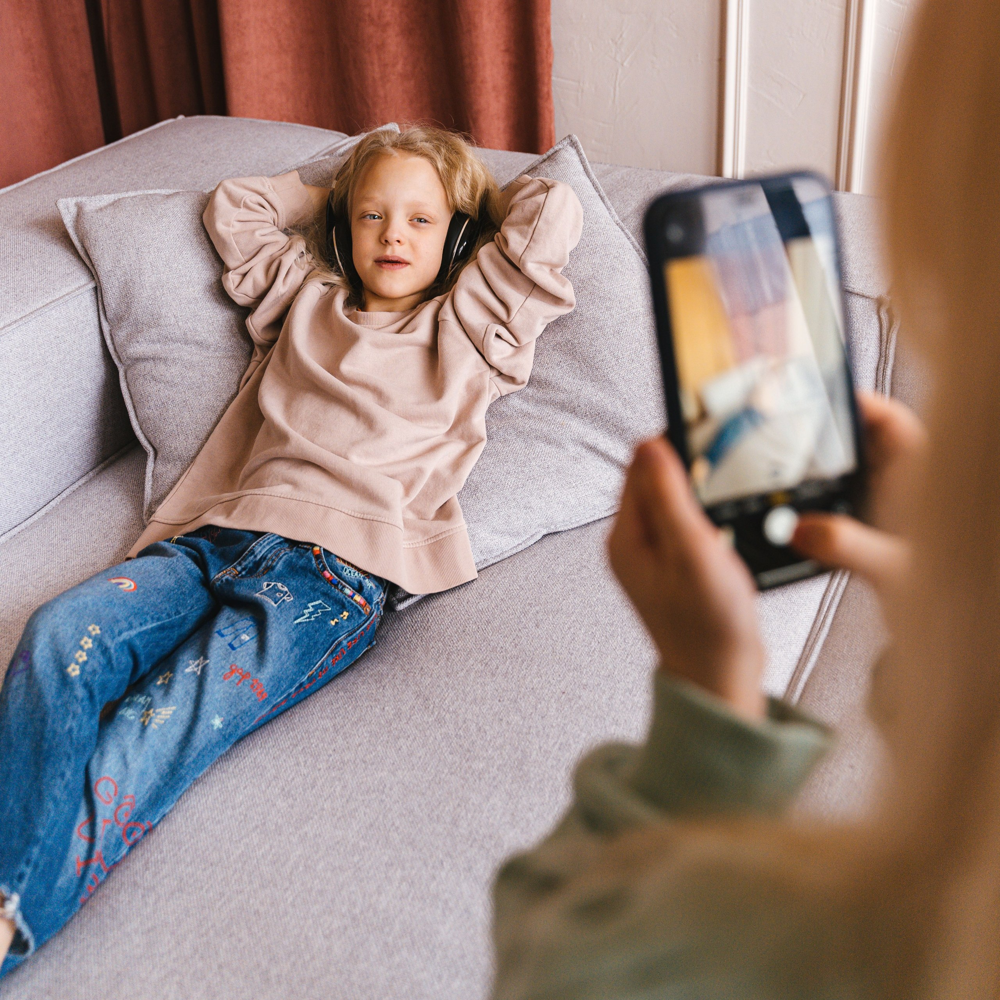
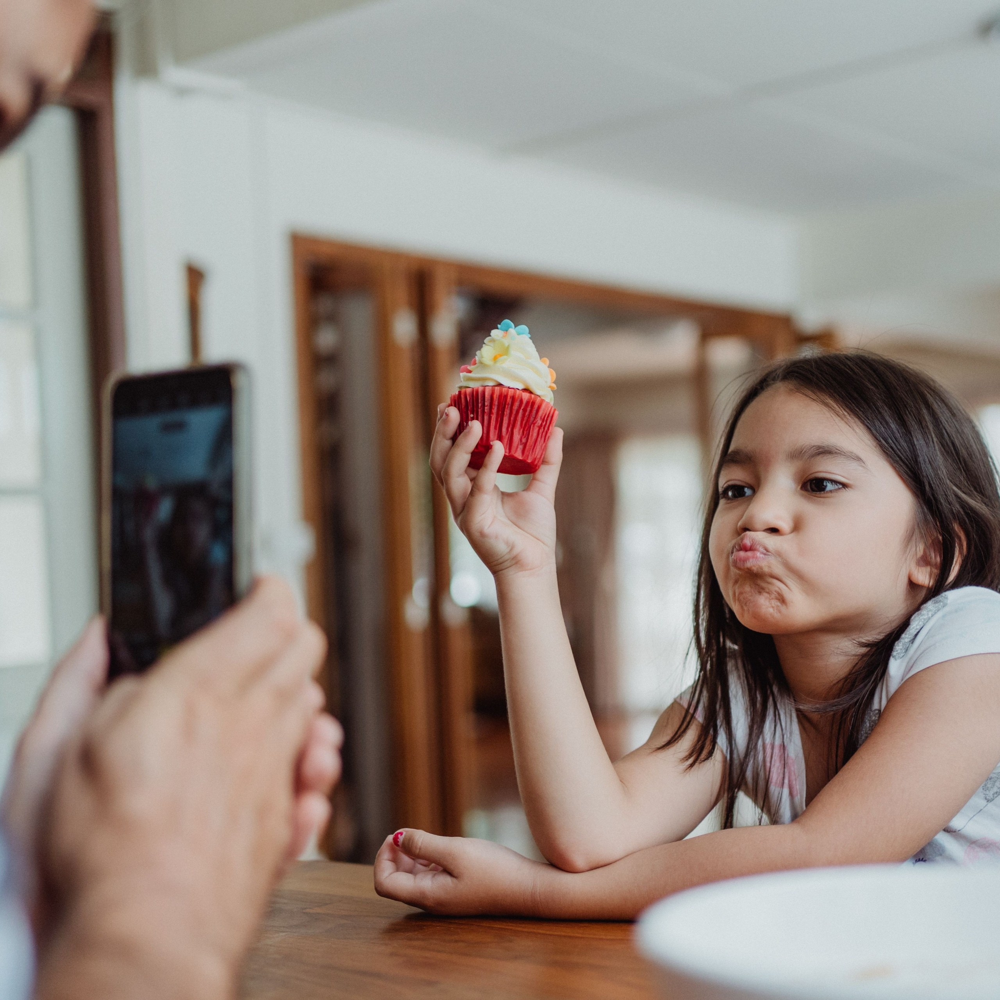
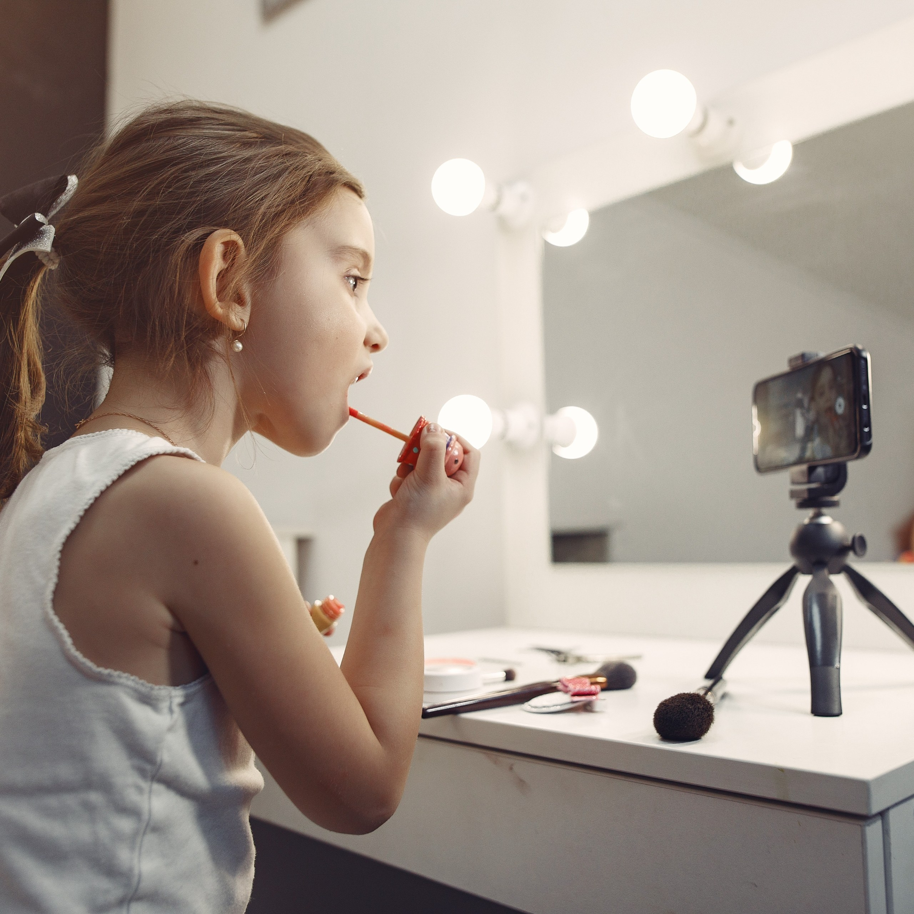
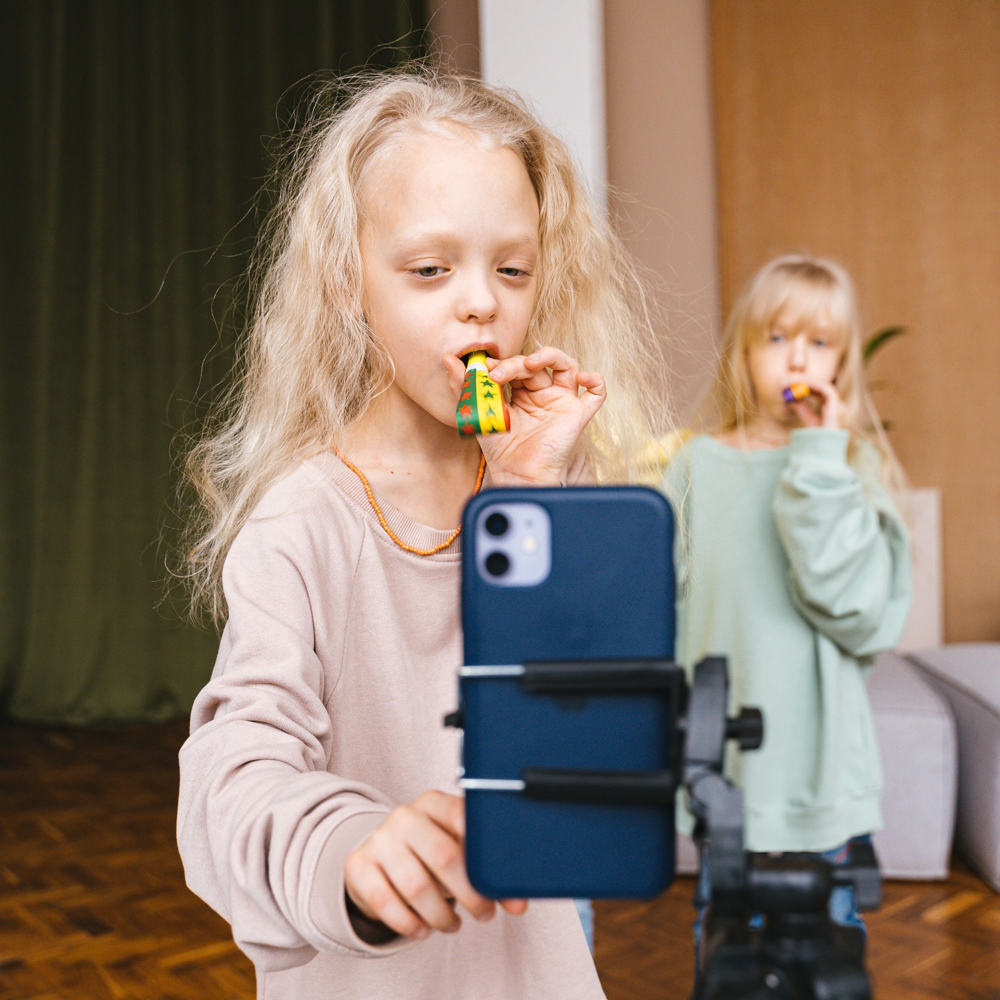

Many are familiar with the negative effects of the online world for kids, particularly when it comes to the consumption of social media content. However, the dangers heavily increase when children become the content:
NO PRIVACY

Childrens personal and intimate moments and information such as outbursts or medical history are exploited for virality and more money. Children cannot privately experience embarrassing phases or mistakes without it being documented online forever.
NO SAFETY

Young "influencers" are exposed to child predators & online bullying from a young age. The sharing of locations & routines further puts kids at risk for facing real-life harassment. Parents can also abuse children in order to produce content.
NO CHILDHOOD

When creating content at a young age, kids childhoods are taken from them. Many child influencers are put into adult situations or are deliberately mistreated for virality. They will remember a childhood of performance, cameras, and social media.
NO CONTROL

Children cannot consent to becoming child influencers. Parents often use their power dynamic to exploit their children by overworking them, exposing them to danger, creating negative digital footprints, and using the money for themselves.
AMONG MANY MORE...
Countless children who escape these "family channels" and "kid influencing" upon adulthood have spoken out on their experiences, with some cases being so serious that criminal charges were inflicted upon responsible parents:
Jessalyn Grace
Jessalyn Grace was a popular child influencer who started her career at only 9 years old. Only 10 years later, after Jessalyn's mom deleted her youtube channel, would Jessalyn speak out. In Jessalyns "My Experience as a 'Child Influencer'," she talks about her mom and how she was forced to act a certain way on camera and work despite exhaustion. She also spoke on recieving limited portions of revenue despite being the star, and even recounted being physically attacked by her mother during an argument.
8 Passengers
The "8 Passengers," was a family vlog channel that posted everyday life content. The owner of the channel and the mother of the children is Ruby Franke. The channel featured frequent videos about her childrens puberty journeys. Deleted footage revealed her yelling at her kids and forcing them to retake certain shots until they came out perfect. In August of 2023, Ruby Franke was charged for starving, physically abusing, and isolating her children.